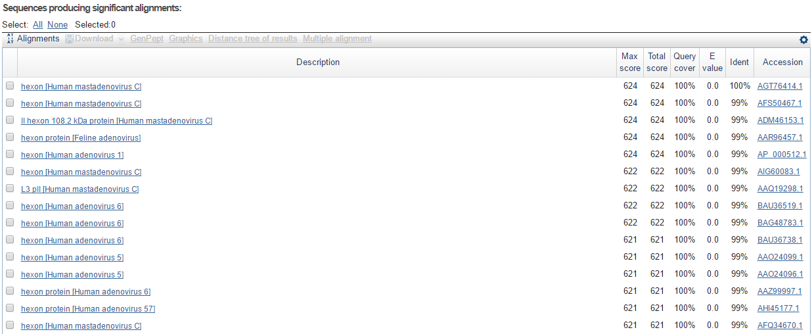

Secuencias biológicas¶
Argumentar la adecuación de las secuencias biológicas utilizadas¶
Las secuencias que se han empleado para establecer la relación filogenética entre las diferentes cepas de HAdV-C son secuencias que se han extraído a partir de muestras recogidas en pacientes pedriáticos con infección respiratoria aguda y pertenecen al extremo carboxilo-terminal del hexón de adenovirus.
Para llegar a esta conclusión, y extraer información relativa a la proteína, se ha utilizado una de las secuencias de nucleótidos obtenidas por los investigadores, a la cual se le ha realizado un blastx. De esta manera, podemos verificar que, efectivamente, la proteína utilizada es una secuencia perteneciente al hexón.
{kind=link}
{kind=link}
Descripción del hexón
{kind=link}
El hexón constituye la principal proteína de la envuelta, presente en 240 de 252 capsómeros. Los capsómeros se forman por la unión y ensamblaje de tres hexones, de manera que, en realidad un capsómero formado por hexones es un homotrímero cuyo monómero es el hexon. Cada monómero consiste en dos dominios que se encuentran empaquetados y plegados de forma similar. Cuando los observamos formando parte del capsómero, podremos observar que los dominios se orientan en un plegamiento de 6 ejes. Asimismo, en los dominios se puede encontrar una estructura en beta-sandwich que forma lo que se conoce como jellyroll, una estructura terciaria caracterizada por beta láminas alternas.
Por otra parte, los hexones presentan diferentes inserciones y variaciones que les permitirán anclarse a otras proteínas de la envuelta, tales como los pentones, o ser unidos por otras proteínas que permiten que se mantengan de forma compacta constituyendo los capsómeros, función realizada por el polipéptido IX, por ejemplo, que mantiene unidos los 9 hexones centrales (homotrímeros de hexones) de una cara.
{kind=link}
El hecho de que el hexón sea la principal proteína de la envuelta (240 de 252 proteínas de la cápside) nos permite tener la certeza de que su importancia resulta fundamental en el mantenimiento del virión y va a estar, por tanto, sometida a una gran presión selectiva. Esto nos va a garantizar dos aspectos: la proteína del hexón estará bien conservada en aquellas zonas que sean fundamentales para su función, pero, y lo que resulta más importante presentará divergencia entre las diferentes cepas de hAdV-C, teniendo mayor cantidad de mutaciones y diferencias aquellas zonas en las que no implique una pérdida total de función con el objetivo de evadir y dificultar la acción del sistema inmune del huésped. En otras palabras, la proteína del hexón debe estar conservada para que el virus ejerza su función, pero divergirá como estrategia de evasión del sistema inmune en función del huésped en cuestión.
Note
(*) Representación de la subunidad del hexón de ADV-2. La parte superior de la molécula (loops DE1, FG1 y FG2) forman la superficie externa de la cápside viral. La base del hexón tiene un pequeño giro (DE2) y 8 jellyrolls (V1 y V2) separados por el conector VC. Estas 8 láminas Beta que constituyen el jellyroll están etiquetadas desde B hasta I.
Descripción de las secuencias utilizadas junto con sus números de accesion.¶
Como ya ha sido tratado anteriormente, las secuencias utilizadas han sido obtenidas a partir de muestras de pacientes pediátricos que presentan SARI por HAdV-C . A continuación, se obtuvieron las secuencias C-terminal de los hexones de estas muestras y, además, se utilizaron secuencias del hexón que provienen del genoma completo de diferentes subtipos de adenovirus para establecer la relación entre las muestras obtenidas y caracterizarlas con su genotipo.
En resumen, las secuencias utilizadas vienen reflejadas en la siguiente tabla:
Tabla 2. Secuencias utilizadas y accession number.
| Accession number | Descripción de la secuencia |
|---|---|
| Genomas completos | |
| HQ003817.1 | Human adenovirus C57 strain human/RUS/16700/2001/57[P1H57F6], complete genome |
| HQ413315.1 | Human adenovirus C6 isolate Tonsil 99, complete genome |
| AC_000017.1 | Human adenovirus type C1, complete genome |
| NC_001405.1 | Human adenovirus C2, complete genome |
| AC_000008.1 | Human adenovirus C5, complete genome |
| Secuencias de pacientes | |
| KM378036.1 | Untyped Human adenovirus isolate CBJ353 hexon gene, partial cds |
| KM378035.1 | Untyped Human adenovirus isolate CBJ350 hexon gene, partial cds |
| KM378033.1 | Untyped Human adenovirus isolate CBJ330 hexon gene, partial cds |
| KM378026.1 | Untyped Human adenovirus isolate CBJ250 hexon gene, partial cds |
| KM377990.1 | Untyped Human adenovirus isolate CBJ017 hexon gene, partial cds |
| KM377989.1 | Untyped Human adenovirus isolate CBJ015 hexon gene, partial cds |
| KM378015.1 | Untyped Human adenovirus isolate CBJ200 hexon gene, partial cds |
| KM378011.1 | Untyped Human adenovirus isolate CBJ184 hexon gene, partial cds |
| KM377998.1 | Untyped Human adenovirus isolate CBJ120 hexon gene, partial cds |
| KM377996.1 | Untyped Human adenovirus isolate CBJ113 hexon gene, partial cds |
| KM377988.1 | Untyped Human adenovirus isolate CBJ008 hexon gene, partial cds |
| KM378034.1 | Untyped Human adenovirus isolate CBJ347 hexon gene, partial cds |
| KM378038.1 | Untyped Human adenovirus isolate CBJ384 hexon gene, partial cds |
| KM378012.1 | Untyped Human adenovirus isolate CBJ187 hexon gene, partial cds |
| KM377987.1 | Untyped Human adenovirus isolate CBJ001 hexon gene, partial cds |
| KM377993.1 | Untyped Human adenovirus isolate CBJ088 hexon gene, partial cds |
| KM377992.1 | Untyped Human adenovirus isolate CBJ071 hexon gene, partial cds |
| KR025776.1 | hADVs_2838 |
| KR025773.1 | hAdVs_2802 |
| KR025771.1 | hAdVs_2797 |
| KR025755.1 | hAdVs_2639 |
| KR025791.1 | hAdVs_2857 |
| KR025775.1 | hAdVs_2826 |
| KR025774.1 | hAdVs_2808 |
| KR025768.1 | hAdVs_2762 |
| KR025766.1 | hAdVs_2741 |
| KR025758.1 | hAdVs_2682 |
| KM877547.1 | hAdVs_305A |
| KM877545.1 | hAdVs_301A |
| KM877544.1 | hAdVs_295A |
| KM877543.1 | hAdVs_287A |
| KM877542.1 | hAdVs_256A |
| KM877541.1 | hAdVs_244A |
| KM877540.1 | hAdVs_240A |
| KM877538.1 | hAdVs_217A |
| KM877537.1 | hAdVs_212A |
| KM877536.1 | hAdVs_207A |
| KM877534.1 | hAdVs_180A |
| KM877533.1 | hAdVs_161A |
| KM877532.1 | hAdVs_136A |
| KM877531.1 | hAdVs_125A |
| KM877530.1 | hAdVs_122A |
| KM877529.1 | hAdVs_103A |
| KM877526.1 | hAdVs_37A |
| KM877525.1 | hAdVs_23A |
| KM877524.1 | hAdVs_18A |
| KM378038.1 | hAdVs_CBJ384 |
| KM378034.1 | hAdVs_CBJ347 |
| KM378033.1 | hAdVs_CBJ330 |
| KM378026.1 | hAdVs_CBJ250 |
| KM378015.1 | hAdVs_CBJ200 |
| KM378012.1 | hAdVs_CBJ187 |
| KM378011.1 | hAdVs_CBJ184 |
| KM377998.1 | hAdVs_CBJ120 |
| KM377996.1 | hAdVs_CBJ113 |
| KM377993.1 | hAdVs_CBJ088 |
| KM377992.1 | hAdVs_CBJ071 |
| KM377990.1 | hAdVs_CBJ017 |
| KM377989.1 | hAdVs_CBJ015 |
| KM377988.1 | hAdVs_CBJ008 |
| KM377987.1 | hAdVs_CBJ001 |
Cuando realicemos el futuro análisis filogenético de las secuencias obtenidas de los pacientes, resulta fundamental para saber al serotipo que pertenece cada una de ellas incorporar una secuencia que pertenezca al serotipo de referencia. De esta manera, en un clado hipotéticamente formado por 5 de las secuencias obtenidas de muestras de pacientes, sabremos que estas corresponden al serotipo HAdV-C5, por ejemplo, gracias a que en este clado estará asociado la secuencia correspondiente y extraída del HAdV-C5.
Por tanto, resulta vital extraer las secuencias correspondientes a la secuencia C-terminal de los hexones que se encuentran a lo largo del genoma completo de cada uno de las diferentes cepas de HAdV-C. Para realizar esta tarea, hemos utilizado varias secuencias provenientes de pacientes y las hemos alineado con el genoma completo de cada uno de los diferentes serotipos, con el objetivo de aislar la región genómica donde se encuentra el locus con nuestro gen de interés, el extremo C-terminal del hexón, para el análisis filogenético.
El algoritmo para el alineamiento utilizado ha sido Clustal y podemos ver en las siguientes figuras la región genómica que hemos extraído de los serotipos HAdV-C57 y HAdV-C6, teniendo marcado el nucleótido desde el que hemos extraído la secuencia y hasta donde hemos llegado. Para el resto de serotipos, el procedimiento realizado ha sido el mismo.
HAdV-C57
{kind=link}
{kind=link}
{kind=link}
{kind=link}
HAdV-C6
{kind=link}
{kind=link}

{kind=link}
Descarga de las secuencias utilizadas en formato .fasta¶
Secuencia hexon C-term extraído de genoma completo de HAdV-C